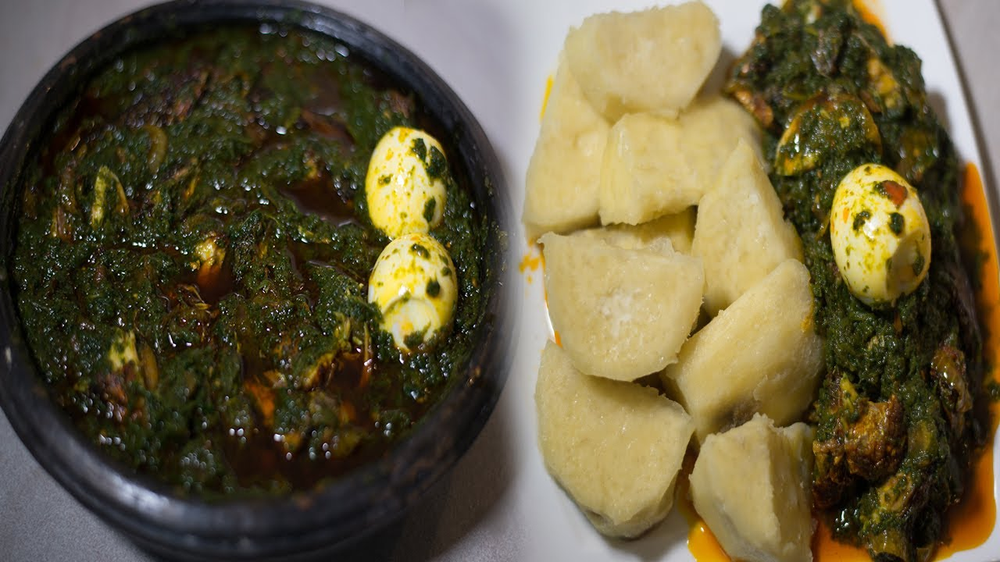

Yam Ampesi

Description
Have you wondered how Yam Ampesi is made? Stress not! I'm here to show you
how it's made.
Ingredients
- Yam
- Oil: Red or Vegetable
- Salt
- Cocoyam leaves
- Boiled Eggs
- Fish and meat of any kind
Steps
- Boil the yyam till it becomes soft: the texture is on you!
- Boil and grind the cocoyam leaves the texture you want
- Boil the eggs: boil the yoke color you prefer
- Start plating: I don't think you want to use all your pans
-
Fry the fish and meat: you can decide to steam or roast; it's all on
you!
-
Now, during the plating, after adding the grinded cassva leaves, mix it
with the oil you prefer. I prefer with Red Oil (Palm oil)
- Don't forget to add the fish and meat!
PS: I do hope you added salt as you cooked!
Kanpai 🍻 Enjoy 👌